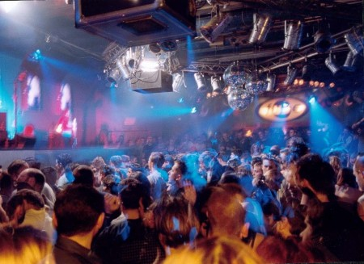

Es la hora de dar un repaso a la noche de Bruselas, a los mejores locales de la ciudad dónde poder decir frases incoherentes al amanecer, dónde dejarnos los cuartos pagando copas a esa chica que, tampoco, nos hizo caso. Lugares dónde no sentir el mazo del tiempo que nos queda a la espalda, dónde sentirse culpable, dónde pasan los cruces, las casualidades y las cosas extrañas, dónde saquear el universo y dejar todo patas arriba, dónde para bien o para mal la realidad esté prohibida. Porque es imposible conocer la jungla si sólo paseas por sus alrededores, conoce la nightlife de la capital de Europa.
Le You: Situado en la Rue Dusquenoy, cerca de la estación Central, abierto de jueves a domingo, pinchan el house más comercial con tiempo para el funk y el R’n’B. Los domingos es momento para el ambiente gay, dónde se puede escuchar el electro más bailongo de Europa.
Recyclart: Quizás el local más alternativo de la ciudad, en Rue des Ursulines 25, se junta el ambiente más underground de Bruselas, ambientado en una estación de trenes. Entre su lío de andenes se puede escuchar electro de última moda mientras conoces a la gente que navega por la subcultura europea.
Le Fuse: Uno de los templos para los grandes amantes de la música electro en Europa, quizá el local con más prestigio musical de Bruselas, y uno de los grandes nombres de la noche europea. Lo frecuentan grandes Dj’s para un público muy exigente que no pare de saltar toda la noche. En Porte De Hal, Rue des Blaes, uno de los lugares donde el reloj corre más rápido.
Louise Gallery: Situada en la avenida Louise, es el lugar preferido para los seguidores de la música más comercial, el funk y el R’nB más oído del momento es el protagonista en esta discoteca, bastante frecuentada, por estudiantes de todo el mundo. Los domingos preparan sesiones de electro para darle forma a fiestas de ambiente gay.